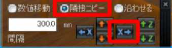
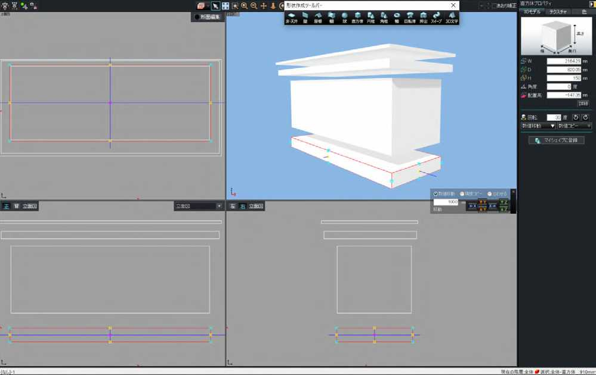
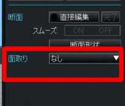
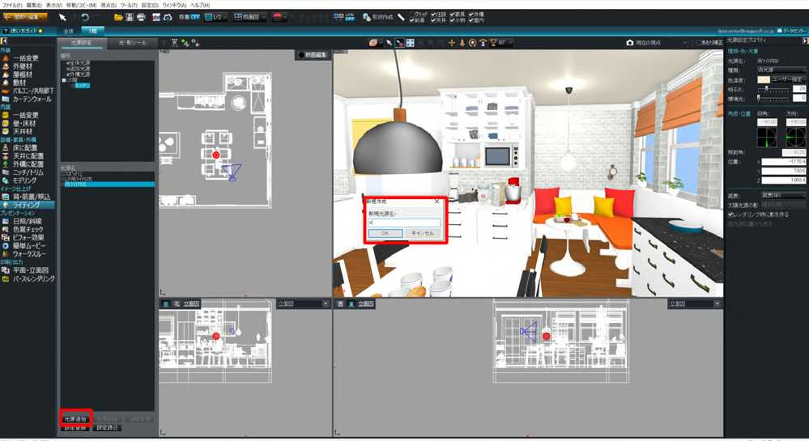

| あっという間にできる美しいパース 造作キッチンとカフェコーナーのある部屋 | |
| ３Ｄマイホームデザイナー、 ３Ｄアーキデザイナー | |
1
はじめに
本書は、３D マイホームデザイナー・３D アーキデザイナーの基本操作をはじめ、パースをより魅力
的に見せるオリジナル家具のつくり方、またライティングや高画質レンダリングをおこない、より美し
く仕上げるための操作手順について解説しています。 表紙・本文に掲載しているパースの３D データは、
本書の特典としてダウンロードできるようになっています。はじめてソフトを使われる方でも、実際に
３D データを操作しながら、手順を確認していただけます。
本書で解説するとおり、インテリアを作り込んでいくには、難しい作業はほとんど必要ありません。
主に家具や建具を配置し、色・テクスチャをイメージに合わせて変更するという基本操作の繰り返しです。
オリジナル家具をつくる場合も、ここで紹介する３D 形状の基本操作を覚えていただければ、今後さま
ざまなオリジナルの家具やインテリア雑貨に活用でき、また既存のパーツを編集・加工して使用してい
ただけるようになると思います。本書、および３D データを、みなさまの美しいパースづくりに役立て
ていただければ幸いです。
操作画面・対象ソフトについて
本書の解説は、一部の機能 ( ※ ) を除き、３D アーキデザイナー、３D マイホームデザイナー PRO9EX、３D マイホームデ
ザイナー PRO9、３D 住宅リフォームデザイナー２、３Ｄインテリアデザイナー Neo3 を対象としています。解説に使用した
画面は３D アーキデザイナーですが、使用するボタンなどの名前がソフトにより異なる場合には補足で記載しています。
m3d（m3da）ファイルのダウンロードページについては巻末の「ダウンロードデータについて」をご覧ください。
( ※）一部の機能（カーテン作成ウィザード、あおり補正機能）は３D アーキデザイナー、３D マイホームデザイナー
PRO9EX、３Ｄインテリアデザイナー Neo3 に搭載されている機能です。それ以外のバージョンには搭載されていません。
2
はじめに ２
ソフトの作業画面 ７
Part1 キッチンスペースをつくる
０．部屋を作成する ９
Step1 部屋を作成する
Step2 柱を配置する
Step3 腰壁を配置する
１．窓とドアをつける 11
Step1 窓を配置する
Step2 ドアを配置する
２．家具の配置と色換え
12
Step1 ハイチェアを配置
Step2 ハイチェアの色を変更する
Step3 ハイチェアをコピーする
３．モールディングと腰壁を付ける
14
Step1 部屋にモールディングと腰壁をつける
Step2 モールディングの種類を変更する
3
Step1 分解したいパーツを配置
Step2 パーツを分解する（グループ解除）
Step3 ガスレンジを取り出す
Step4 グループ化して登録する
５．造作キッチンをつくる 18
Step1 直方体ツールで天板を作る
Step2 その他のパーツも作成する
Step3 色やテクスチャを設定する
Step4 ガスレンジと換気扇を配置する
Step5 グループ化して登録する
６．小物を置く
21
Step1 視点を移動する
Step2 食器棚に小物を配置する
Step3 小物を分解して配置する
Step4 その他の小物の場所
７．床材を貼る
20
Step1 床材を貼る
Step2 木目の方向を変更する
Step3 貼り付けサイズを調整する
4
８．造作ベンチをつくる
25
8-1 座面をつくる 25
Step1 [3D モデリング ] を開く
Step2 座面を 2 枚作成する
Step3 座面 2 枚を合わせてお気に入りに登録
8-2 脚をつくる
27
Step1 ベンチの脚をつくる
Step2 断面編集の画面を開く
Step3 頂点を編集して形をつくる
Step4 円弧に変形する
Step5 お気に入りに登録する
8-3 組み立てる
29
Step1 登録した部品を組み立てる
Step2 クッションを配置する
Step3 クッションに色やテクスチャを設定する
Step4 グループ化してお気に入りに登録する
９．カーテンウィザードでカーテンをつくる
31
Step1 カーテンウィザードを開く
Step2 ウィザードに沿って進める
Step3 窓取り付ける
5
Step1 吊りライトを選ぶ
Step2 設置する
Step3 壁付け照明を設置する
11．ライティング 34
Step1 照明器具を確認する
Step2 光源を追加する
Step3 光源の位置と明るさを調整する
Step4 その他の光源を配置する
12．レンダリング 36
Step1 視点を決める
Step2 レンダリングをする
Step3 レンダリング結果をイメージ保存する
ダウンロードデータについて 38
6
ソフトの作業画面
間取り画面の操作と３D 画面の操作は同じで、左側のナビボタンでしたい操作を選び、パレット
から配置したいもの（部屋・ドア・窓など）を選んでクリック、次に中央の【作図エリア】の配
置したい場所でクリック。この作業の繰り返しになります。配置したものの大きさ・色や模様な
どの変更作業は、向かって右側のプロパティパレットでおこないます。
〔間取り画面〕
〔3D 画面〕
7


Part1 キッチンスペースをつくる
この章では、まず土台となる部屋を作成し、次にキッチン部分の家具や設備をつくっていきます。
下のパースで、番号を振ったものの作成方法を順番に解説していきます。リストのオレンジ色の
丸で囲った数字のものは、〔間取り編集〕で、青色のものは〔３D 画面〕で作業します（「ソフト
の作業画面 ７ページを参照）。
窓とドアをつける
家具の配置と色換え
モールディングと腰壁を付ける
パーツを分解して一部を使う
造作キッチンをつくる
小物を置く
床材を貼る
8
０．部屋を作成する
Step1 部屋を作成する
ナビボタンは【部屋作成】を選択し
ます。
パレット下部の〈多角形入力〉の《多
角形》を押して、部屋の頂点をクリッ
クします。多角形のキッチンができ
ました。（この部屋は頂点６カ所）。
Step2 柱を配置する
ナビボタンは【壁編集・柱・梁】を
選択します。
〈柱配置〉の中の《四角柱》を押し
て部屋の中に柱を配置します。ここ
では４カ所柱を置いています（この
後、この柱の間に窓を設置します）。
※柱・梁大きさは画面右側のプロパ
ティパレットで指定できます。
Step3 腰壁を配置する
同じく Step2 の《四角柱》を使って、
同じ面に腰高の壁を作成します。
9
間取り画面の左ナビボタンの一番下
【立体化】すると３D 画面で確認で
きます。
完成イメージ。３D 画面で見ると、柱と腰壁はこのようになっています。
10

窓とドアをつける
Step1 窓を配置する
ナビボタンは【ドア・窓】を選択し
ます。
窓を選び、間取りに配置します。今
回は〈デザイン窓〉の《装飾窓》か
ら選びました。同様に全ての窓を配
置。
大きさを変更したいときは、右側の
プロパティパレットで幅・高さ・奥
行きの数値を入力して変更できま
す。
Step2 ドアを配置する
窓と同様にパレットからドアを選
び、壁の上でクリックして配置しま
す。今回は〈室外用戸〉の《テラス
戸》から選んだものを配置。開く方
向を決めてもう一度クリックで配置
できます。
その他の開口も同様に配置します。
11

家具の配置と色換え
Step1 ハイチェアを配置
椅子などの家具は間取りでも配置で
きますが、イメージを確認しながら
作業を進めるため、立体化した３D
画面で配置します。
３D 画面には、間取り画面の左ナビ
ボタンの一番下【立体化】をクリッ
クします。
ナビボタンは【床に配置】を選択し
ます。
今回は〈ダイニング〉の《ダイニン
グチェア》の中からハイチェアを選
び配置します。
12

Step2 ハイチェアの色を変
更する
パレットを〈色〉に切替ます。
好みの色を選び、ハイチェアをク
リックして色をつけます。このとき
パレット下部の《対象》によって色
の塗られる範囲が変わります。今回
は、〔全体〕を選択して座面も脚も
オレンジにしました。
Step3 ハイチェアをコピー
する
色を変更したハイチェアを横にあと
2 脚並べます。
シフトパッドの〈隣接コピー〉を
チェックし、間隔を入力してコピー
する方向の矢印《X ←・→》をコピー
したい回数押します。
シフトパッド
13

モールディングと腰壁を付ける
Step1 部屋にモールディン
グと腰壁をつける
間取り編集で部屋を選択します。３
D 画面からは、左上の [ 間取り編集
へ ] から移動します。
部屋を選択すると、右側に部屋プロ
パティパレットが現れます。一番下
の〈立体化設定〉の《詳細設定》を
クリックし、〔部屋のプロパティ〕
を開きます。
次に〈立体化設定〉タブをクリック
し、部屋に設定するモールディン
グにチェックを入れ〔OK〕します。
今回は、幅木・腰壁・廻り縁を選択
14
します。
Step2 モールディングの種
類を変更する
プロパティパレットの〈立体化設定〉
にあるプルダウンボタンで、《モー
ルディングタイプ》をクリックし、
希望のものを選びます。今回は、
〔モールディングタイプ２〕を選択。
15
パーツを分解して一部を使う
Step1 分解したいパーツを
配置
オリジナルの造作キッチンに使うガ
スレンジを既存のキッチンパーツか
ら取り出します。
取り出したいガスレンジがついてい
るキッチンをどこかに配置。その
キッチンの階層に入ったところ
キッチンをクリック、さらに右ク
リックして、「このパーツ階層へ移
る」を選択します。
Step2 パ ー ツ を 分 解 す る
（グループ解除）
この階層に入ることで、キッチンの
吊戸棚と流し台とが分かれました。
次に流し台のほうをクリックし、さ
らに右クリックして「グループ解除」
を選択します。
Step3 ガスレンジを取り出
す
必要のない部品をクリックして
16 〔Delete〕キーで削除します
ガスレンジ以外の部分を選択し、
〔Delete〕キーですべて削除。ガス
レンジだけにします。
Step4 グループ化して登録
する
平面図上でガスレンジを囲むように
左上から右下にドラッグして選択し
ます。
次に右クリックし、「グループ化」
を選びます。
さらに右クリックし、「お気に入り
に登録」を選び、名前をつけて保存
します。
左上の操作画面で、ガスレンジのすべてを選択
登録したガスレンジは左パレットの
《パーツ》－〈お気に入り〉に登録
されます。
※造作キッチンに使う時は、〈お気
に入り〉からクリックして配置しま
す。
17
造作キッチンをつくる
オリジナルの家具や小物は、３D 画面の [ 形状作成ツール ] を使って作成します。作成した形状
に色やテクスチャを付けて「グループ化」し、
「お気に入りに登録」すると、今後いつでも、どのデー
タにも活用できるパーツができあがります。
Step1 直方体ツールで天板
を作る
キッチンの天板を作成します。
[形状作成]ボタンをクリックし、
〈形
状作成ツールバー〉が表示されたら
《直方体》をクリックします。
上面図で左上から右下にドラッグし
て長方形を作成します。大きさは画
面右側の〈３D モデル〉タブで希望
の数値（縦・横・厚み）を入力して
変更します。
18

Step2 その他のパーツも作
成する
同様に直方体でその他のパーツを作
成します。（今回は直方体を５つ作
成）。
できあがった形状を組み合わせま
す。
※〈シフトパッド〉の《沿わせる》
で [Z] ボタンを使うと上下にあるも
のにぴったりと沿います。
Step3 色やテクスチャを設
定する
できあがったキッチンに色やテクス
チャを貼ります。
パレットのタブを〈テクスチャ〉か
〈色〉に切替て、貼りたいものをク
リック。次に貼りたい場所をクリッ
クします。
プロパティパレットでテクスチャの
貼り付け方向、繰り返しサイズ、色
調補正などが変更できます。
Step4 ガスレンジと換気扇
を配置する
「４ パーツを分解して一部を使う」
でお気に入りに登録した「ガスレン
ジ」を作成したキッチンの上に配置
します。
19
換気扇は〈パーツ〉パレットの《キッ
チン》の〔調理器具〕の中にあります。
大きさや配置高などは〈３D モデル〉
パレットで調整できます。
Step5 グループ化して登録
する
すべてを選択してグループ化し、お
気に入りに登録し、間取りで配置し
ます。
20

小物を置く
Step1 視点を移動する
小物パーツは 3D 画面で配置します
（間取り編集画面でもできます）。
まず、配置したい家具に視点を合わ
せます。ツールバーの［立つ位置と
見る方向を決める］ボタンをクリッ
クし、平面図の上で、③立つ位置を
クリックし④見る方向をクリックし
ます。
Step2 食器棚に小物を配置
する
食器棚に小物を置いてみましょう。
ナビボタンの【床に配置】を選択し
ます。
シュガーポットなどの小物は〈キッ
チン〉の《調理器具》にあります。
小物をクリックしたら、パース図の
棚の中でクリックすると配置できま
す。細かい位置調整は立面図を使い
21
ます。

Step3 小物を分解して配置
する
小物もグループを解除して、構成
パーツをバラバラに配置することも
できます。左図は袋と調理器具を分
解して別々の場所に配置した例で
す。配置・移動しやすいように適宜
グループ化をおこなってください。
Step4 その他の小物の場所
クッションは〈雑貨・趣味〉の《生
活用品・置物》の中にあります。壁
掛け時計や置時計も同じ場所にあり
ます。
小物を配置した後は、プロパティパ
レットの〈３D モデル〉で空間に合っ
たサイズに、〈テクスチャ〉や〈色〉
も好きなカラーや柄に変更すること
ができます。
22
床材を貼る
Step1 床材を貼る
ナビボタンは【壁・床材】を選択しま
す。〈テクスチャ〉パレットの《床材》
の中にフローリング用のテクスチャが
入っています。貼りたいものを選んで、
３D 画面の床の上でクリックします。
Step2 木目の方向を変更する
貼り付け後に、プロパティパレットの
〈回転〉で《90°》を選ぶと木目の方
向が変更できます。
Step3 貼り付けサイズを調整
する
床をクリックし、プロパティパレット
の〈サイズ〉の格子状のボタンをクリッ
クします。貼り付けサイズ（繰り返し
回数）が変わります。
23


Part2 ダイニングスペースをつくる
この章では、ダイニング側をつくっていきます。キッチンより形状が複雑な「造作ベンチ」に挑
戦してみましょう。難しそうに思われるかもしれませんが、意外に簡単。四角い形状に頂点を加
えていくことで、複雑なラインが描けます。さらに、カーテンや照明でインテリアコーディネー
トを完成させましょう。最後に明るさの調整をおこなってレンダリングです。これで、よりきれ
いなパースに仕上がります。
造作ベンチをつくる
8-1 座面をつくる
8-2 脚をつくる
8-3 組み合わせる
カーテンウィザードでカーテンをつくる
照明を配置する
ライティング
レンダリング
24
造作ベンチをつくる
8-1 座面をつくる
Step1 [3D モ デ リ ン グ ] を
開く
ソフトを起動し、メインメニューの
〔3D モデリング〕を選択します。
〔３D 画面〕が開きます。
25

Step2 座面を 2 枚作成する
[ 形状作成 ] ボタンをクリックし〈形
状作成ツールバー〉が表示されたら
《直方体》をクリックします。
上面図で左上から右下にドラッグし
て長方形を作成します。大きさは画
面右側のプロパティパレットの〈３
D モデル〉タブで入力します。
座面（１）サイズ
サ イ ズ 違 い（ 奥 行 き 600mm と
580mm）の直方体を２枚作成しま
す。２枚を重ねて座面の角に、凹凸
の装飾に見せるためです。
座面（２）サイズは奥行の（D）を 580mm にします。
Step3 座面 2 枚を合わせて
お気に入りに登録
2 枚の座面ができたら合わせます。
次に、全部選択してグループ化し、
お気に入りに登録します。
L 字型のベンチなので、短い方の座
面も同様に作成します。サイズは
(W)750mm、(D)600mm、(H)20mm
で、奥行が (D)580mm の 2 枚を重
ねます。
26

8-2 脚をつくる
Step1 ベンチの脚をつくる
座面がお気に入りに登録ができた
ら、作業エリアにある座面は一旦
〔Delete〕キーで削除します。
［形状作成］ボタンをクリックし〈形
状作成ツールバー〉が表示されたら
《押出》をクリックします。
左下のエリア〔立面図〕上で４カ所
クリックして四角い形状を作成しま
す。※サイズは後で設定するので、
好きな大きさで作成します。
プロパティパレットの〈面取り〉を
《なし》にしておきます。
※ こ の 機 能 は ３D ア ー キ デ ザ イ
ナーにのみ搭載されているのでその
他のソフトをご使用の場合は読み飛
ばしてください。
Step2 断面編集の画面を開
く
プロパティパレットの〈断面編集〉
または〈詳細編集〉ボタンをクリッ
クします。
ウィンドウが開いたら、「オプショ
ン 」 メ ニ ュ ー か ら「 グ リ ッ ド 間
隔」をクリックし、グリッド間隔を
〔100mm〕に変更します。
27
Step3 頂点を編集して形を
つくる
線上をクリックすると、頂点（△）
が追加されます。追加した頂点をド
ラッグして左図のような形にしま
す。
○で囲んだ頂点の位置は〔Y：50〕
に設定します。
※頂点はクリックして〔Delete〕キー
で削除できます。
Step4 円弧に変形する
上部の突き出た部分を円弧にしま
す。
ツールボタンの〈円弧に並べる〉
ボタンを押し、半円をつくるように
クリックします。
※円弧のできる方向が違う場合は一
旦、右クリックして円弧の設定をや
めて、
「整列」メニューの「円弧設定」
－「反時計周り」または「時計周り」
の現在と違う方向を選びます。
再度円弧に並べる操作をおこないま
す。
円弧の頂点をなめらかにするため
に、スムーズをかけます。円弧を選
択し、
〔スムーズ〕ボタンをおします。
〔OK〕を押します。
28
プ ロ パ テ ィ パ レ ッ ト で 脚 の サ イ
ズ を 調 整 し ま す。 今 回 は プ ロ パ
ティパレットの〈３D モデル〉で、
(W)600mm、(D)380mm、(H)30mm
を入力します。
Step5 お気に入りに登録す
る
完成した脚を右クリックし、「お気
に入りへ登録」を選び、名前をつけ
て保存します。
8-3 組み立てる
Step1 登録した部品を組み
立てる
登録した座面と脚をパレットから適
当な場所に配置して、上に座面を乗
せてベンチを組み立てます。組み立
てたらグループ化します。
Step2 クッションを配置す
る
座面のクッションは、〈パーツ〉パ
レットの《雑貨・趣味》－〔生活用品・
置物〕の中の〔ｸｯｼｮﾝ A005〕を使
います。プロパティパレットの〈３
D モデル〉で大きさを変更します。
今回はベンチの座面と同じサイズ
(W)1500mm、(D)600mm。 ベ ン チ
に沿わせて配置します。このとき〔吸
着 OFF〕にすると配置しやすいです。
29
次に、クッション大と小を配置しま
す。今回は〔ｸｯｼｮﾝ Q01〕と「ｸｯｼｮ
ﾝ Q02」を配置します。
パーツを回転するには水色のハンド
ルをドラッグします。
クッションの厚みをドラッグで変更
するには、クッションをダブルク
リックして〔パーツのプロパティ〕
を開き、〈マウスドラッグでサイ
ズと傾きの変更を可能にする〉に
チェックを入れて [OK] します。
黄色いハンドルが表示されたらド
ラッグしてクッションの厚みを調整
します。
Step3 クッションに色やテ
クスチャを設定する
パレットを〈テクスチャ〉や〈色〉
に切替て、クッションに色やテクス
チャを設定します。
Step4 グループ化してお気
に入りに登録する
全てのパーツを選択してグループ化
し、お気に入りに登録します。
30
カーテンウィザードでカーテンをつくる
※この機能は３D アーキデザイナー、３Ｄマイホームデザイナー PRO9EX、３D インテリアデザイナー Neo3
にのみ搭載されています。
Step1 カーテンウィザード
を開く
間取り編集に戻ります。
ナビボタンは【カーテン】を選択、
パレット下部の〈カーテン作成〉を
クリックします。
Step2 ウィザードに沿って
進める
《カーテン作成ウィザード》の「次
へ」を押します。〈窓イメージ設定〉
でカーテンを取り付けたい窓を選び
ます。
《デザインの設定》でカーテンの種
類を選びます。「次へ」を押して、
〔オ
プション設定〕でレールやカーテン
ボックスなどの設定をおこない、次
の画面で色やテクスチャを設定しま
す。
31
最後に名前をつけて保存します。
Step3 窓を取り付ける
保存したらパレットに表示されるの
で、クリックして取り付けたい窓の
上でクリックすると設置完了です。
32
照明を設置する
照明は「間取り編集」と「３D 画面」の両方で配置できますが、デザインを確認しながら配置す
るには３D 画面のほうが適しています。
Step1 吊りライトを選ぶ
ナビボタンは【天井に配置】を選択
します。
パレットの〈照明〉をクリックし、
種類を《吊ライト》にします。
Step2 設置する
配置するライトを選び、平面図上に
設置します。
※パース図で設置すると位置がわか
りにくいので、平面図で設置すると
よいでしょう。
Step3 壁付け照明を設置す
る
《壁付け照明》を配置する際には、
パース図で配置したい壁が見えるよ
うに視点を調整してから照明を選
び、配置したい場所でクリックしま
す（壁付けの照明の場合、壁に吸着
されます）。立面図を利用して位置
を調整します。
33


ライティング
照明器具パーツには光源が設定されているので、配置すると画面上で点灯します。それだけで
もきれいなパースに見えますが、室内を実際の空間のように表現するにはライティングの設定と
レンダリング（光や影の計算）が必要です。
作成するパースの目的に応じてライティングの設定は異なりますが、ここでは部屋全体が明る
く見える簡単なライティングの方法をご紹介します。
Step1 照明器具を確認する
ナビボタンは【ライティング】を選
択します。
〈光源設定〉タブで 1 階のキッチン
をクリックすると、データ内の光源
が確認できます。今回は、３つの照
明です。レンダリング後に明るすぎ
たり、暗すぎる場合、ここで調整し
ます。
Step2 光源を追加する
下部の〈光源追加〉ボタンを押しま
す。光源名にアルファベットの「a」
（任意で名前を入れてください）と
入れ〔OK〕します。
Step3 光源の位置と明るさ
を調整する
画面に赤い光源のボールが表示され
るので、設置したい場所に移動させ
ます。
今回は、プロパティパレットで光源
の種類は〈点光源〉、明るさを〈16〉
に設定しています。
34
Step4 その他の光源を配置
する
部屋全体をまんべんなく照らすた
め、全部で 11 個の点光源を部屋の
中にちりばめて配置しました。
※部屋の明るさは、太陽光が入る窓
の大きさや、照明器具、追加光源で
調整します。
35
レンダリング
Step1 視点を決める
レンダリングを行う前に出力したい
視点を決めます。
[ 視点変更ツール ] ボタンで視点の
距離・方向が調整できます。
視点が調整できたら画面右上の〔あ
おり補正〕にチェックを入れます。
※〔あおり補正〕機能がついていな
いバージョンでは、
「視点」メニュー
の「視点数値設定」を開き、〔仰角〕
を〔0〕にするとあおり補正ができ
ます。パースで視点を調整する際に
はスクロールで調整します。
決めた視点を登録しておくには、
〔現
在の視点〕の横のカメラの絵のボタ
ンをクリックして名前を付けて保存
します。
Step2 レンダリングをする
ナビボタンは【パース ･ レンダリン
グ】を選択します。
〈パース図出力〉パレットの《レン
ダリング》ボタンを押し、サイズを
指定して《出力》ボタンを押します。
レ ン ダ リ ン グ 方 法 選 択 画 面 で
〔Optimage〕を選択し、次の画面で
〔現在の光源設定〕を選択します。
次の画面で Optimage にログインし
ます。
《Memo》 3D マイホームデザイナー PRO9 と 3D 住宅リフォームデザイナーには Optimage は付属し
ていませんが別途購入することが可能です。詳しくはメガソフトホームページをご覧ください。
36
〔レンダリング設定〕が開きます。
このまま〈開始〉ボタンを押すと本
レンダリングが開始されますが、通
常は〈テスト〉ボタンを押してテス
トレンダリングをおこない、光源設
定の効果を確認し、必要なら再度ラ
イティングを調整してから本レンダ
リングをおこないます。
※テストレンダリングではポイント
は消費されません。
Step3 レンダリング結果を
イメージ保存する
レンダイングが完了したら、〈ファ
イル〉メニューから《イメージ保存》
を選び名前を付けて保存します。
保存したイメージはプレゼンボード
に貼り付けたり印刷したりできま
す。
37
ダウンロードデータについて
特典の３D データは、下記のページにアクセスし、製品別にダウンロードでき
ます。ダウンロードしたデータは各ソフトの「ファイルを開く」から開きご確認
いただけます。
https://www.megasoft.co.jp/kindle/beautiful-pers01.html 38
あっという間にできる美しいパース 造作キッチンとカフェコーナーのある部屋
発行日 2019 年 ４月
著者 ３Ｄマイホームデザイナー・3D アーキデザイナー
発行者 井町 良明
発行 メガソフト株式会社
〒 530-0015 大阪市北区中崎西 2-4-12 梅田センタービル 11 階
※本テキストを無断で複写複製（コピー）、転載することは、著作権法上で禁じられています。
© Megasoft Inc.
39